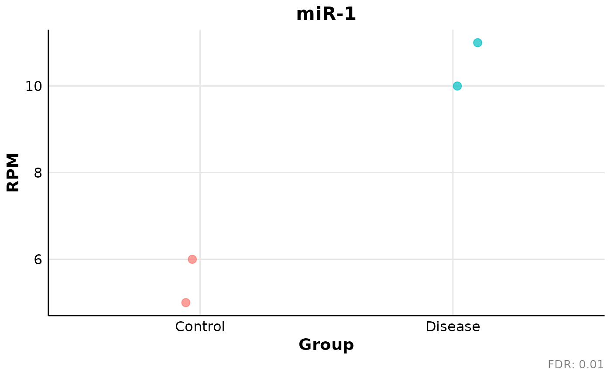

Create individual expression plots for selected miRNAs
Source:R/Individual_dotplot.R
individual_miRNA_plot.RdCreates one dot plot per selected miRNA across one or more groups. Plots can be returned without writing files or optionally saved as PNG images.
Usage
individual_miRNA_plot(
filtered_results = NULL,
rpm_matrix = NULL,
metadata = NULL,
condition_column = NULL,
sample_column = "Sample",
groups_to_include = NULL,
condition_colors = NULL,
adjusted_pvalue_column = "FDR",
output_dir = "Individual_plots",
save_png = TRUE,
mirna_column = "miRNA",
mirnas = NULL,
point_size = 3,
point_alpha = 0.7,
jitter_width = 0.12,
width = 6,
height = 6,
dpi = 300
)Arguments
- filtered_results
Optional data frame, matrix or character vector defining the miRNAs to plot. For a table, the miRNA names are taken from `mirna_column`; when that column is absent, the first column is used for backward compatibility with miRPM 0.1.0.
- rpm_matrix
Numeric matrix or data frame containing normalized RPM values, with miRNAs in rows and samples in columns.
- metadata
Data frame containing sample metadata.
- condition_column
Name of the metadata column defining the groups.
- sample_column
Name of the metadata column containing sample identifiers. Default is `"Sample"`.
- groups_to_include
Optional character vector defining the groups to display and their order. When `NULL`, all observed groups are included.
- condition_colors
Optional named character vector assigning a color to every selected group. When `NULL`, the default `ggplot2` palette is used.
- adjusted_pvalue_column
Optional name of the adjusted p-value column in `filtered_results`. When `NULL`, no adjusted p-value is shown. Default is `"FDR"`.
- output_dir
Main directory used when `save_png = TRUE`.
- save_png
Logical. If `TRUE`, save one PNG file per miRNA.
- mirna_column
Name of the miRNA column in `filtered_results`. Default is `"miRNA"`.
- mirnas
Preferred direct character vector of miRNA names. Supply either `mirnas` or `filtered_results`, not both.
- point_size
Numeric point size.
- point_alpha
Numeric point transparency between 0 and 1.
- jitter_width
Numeric horizontal jitter width. Use zero to disable jitter.
- width
Numeric PNG width in inches.
- height
Numeric PNG height in inches.
- dpi
Numeric PNG resolution.
Value
A list containing:
`plots`: named list of `ggplot2` objects.
`files`: named character vector of saved PNG paths, or an empty character vector when `save_png = FALSE`.
`data`: aligned long-format data used for plotting.
`selected_mirnas`: miRNAs included in the plots.
`missing_mirnas`: requested miRNAs absent from the matrix.
`groups`: groups included in the plots.
`adjusted_pvalues`: named adjusted p-values used in captions.
`output_folder`: output directory, or `NULL`.
Details
Metadata are aligned to the RPM matrix using sample identifiers, not row position. Missing requested miRNAs are reported and omitted.
The historical miRPM 0.1.0 positional interface remains supported:
`individual_miRNA_plot(filtered_results, rpm_matrix, metadata, condition_column, sample_column, groups_to_include, condition_colors, adjusted_pvalue_column, output_dir)`.
Examples
rpm_matrix <- matrix(
c(
5, 6, 10, 11,
2, 3, 8, 9
),
nrow = 2,
byrow = TRUE,
dimnames = list(
c("miR-1", "miR-2"),
c("S1", "S2", "S3", "S4")
)
)
metadata <- data.frame(
Sample = c("S3", "S1", "S4", "S2"),
Condition = c("Disease", "Control", "Disease", "Control")
)
results <- data.frame(
miRNA = c("miR-1", "miR-2"),
FDR = c(0.01, 0.04)
)
output <- individual_miRNA_plot(
filtered_results = results,
rpm_matrix = rpm_matrix,
metadata = metadata,
condition_column = "Condition",
groups_to_include = c("Control", "Disease"),
save_png = FALSE
)
output$plots[["miR-1"]]
